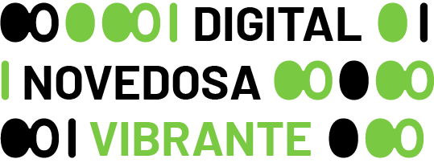

Sistema de diseño Onda Cero

El nuevo diseño de Onda Cero está basado en el lenguaje binario, que ha conformado la marca y todo el sistema de diseño. Este código relaciona la nueva Onda Cero con el ámbito digital, modernizándolo y acercándolo a un público más joven. Además el nuevo uso del color una aporta energía y vitalidad de la que la marca anterior carecía.